These have results per 1-second interval for: insert rate (IPS) and max insert reponse time.
The results are from 1 client while the test may have N clients where N > 1.
Contents
fbmy8028_rel_withdbg.cay9c1g: IPS
fbmy8028_rel_withdbg.cay9c1g
fbmy8028_rel_withdbg.cay9c1g: max insert response time
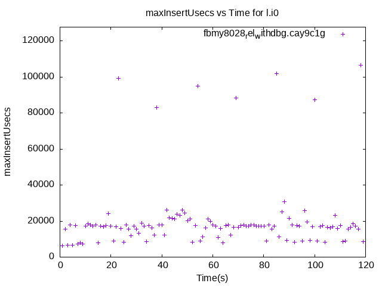fbmy8028_rel_withdbg.cay9c1g
fbmy8028_rel.cay9c1g: IPS
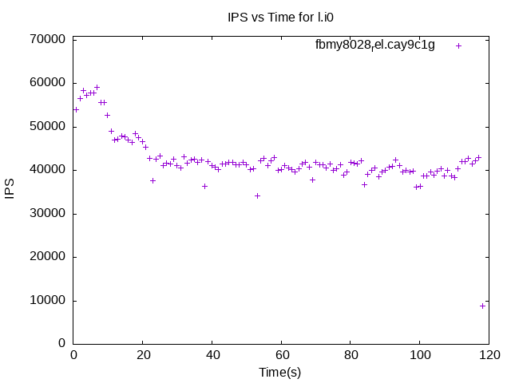fbmy8028_rel.cay9c1g
fbmy8028_rel.cay9c1g: max insert response time
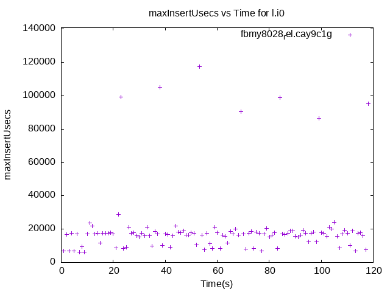fbmy8028_rel.cay9c1g
fbmy8028_rel_o2.cay9c1g: IPS
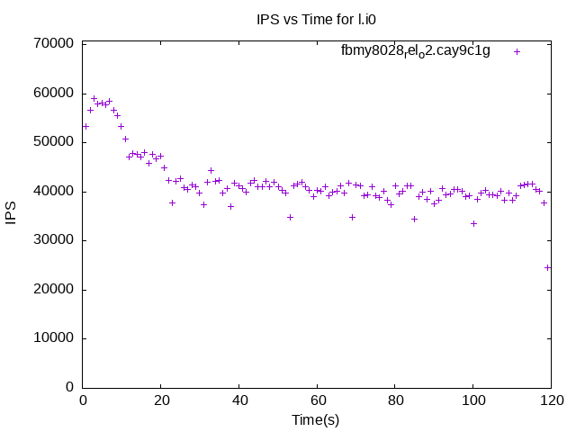fbmy8028_rel_o2.cay9c1g
fbmy8028_rel_o2.cay9c1g: max insert response time
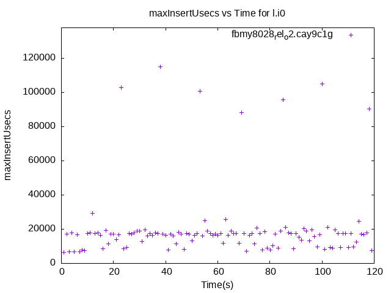fbmy8028_rel_o2.cay9c1g
fbmy8028_rel_native.cay9c1g: IPS
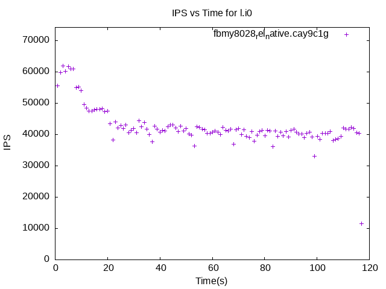fbmy8028_rel_native.cay9c1g
fbmy8028_rel_native.cay9c1g: max insert response time
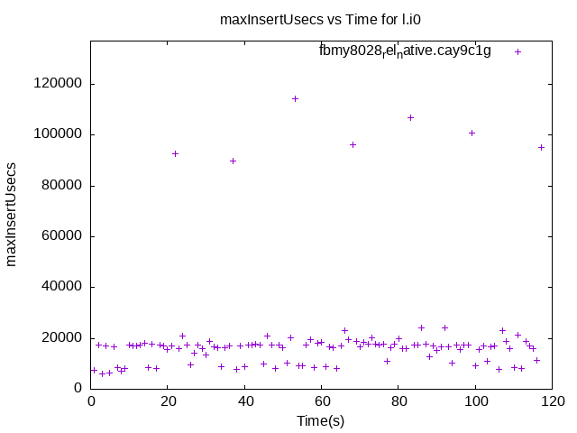fbmy8028_rel_native.cay9c1g
fbmy8028_rel_o2_lto.cay9c1g: IPS
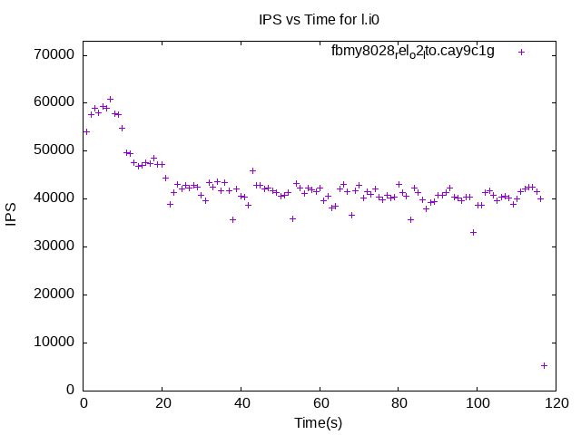fbmy8028_rel_o2_lto.cay9c1g
fbmy8028_rel_o2_lto.cay9c1g: max insert response time
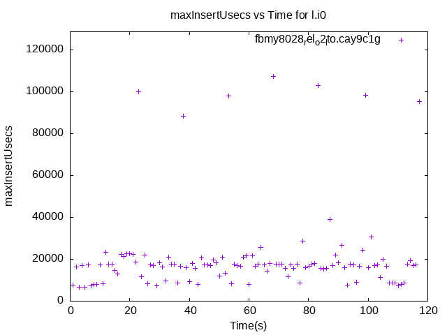fbmy8028_rel_o2_lto.cay9c1g
fbmy8028_rel_lto.cay9c1g: IPS
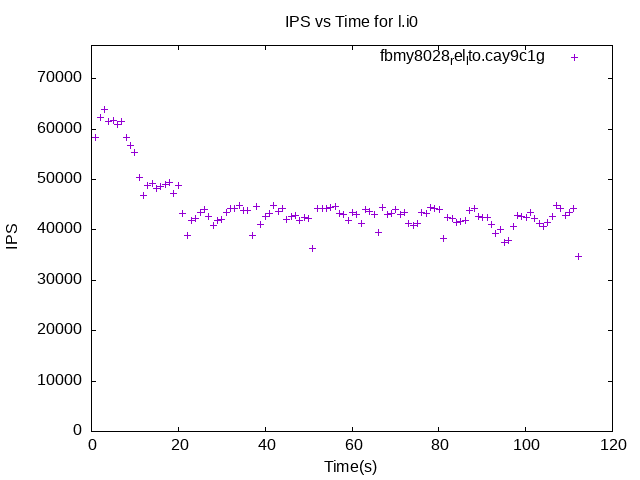fbmy8028_rel_lto.cay9c1g
fbmy8028_rel_lto.cay9c1g: max insert response time
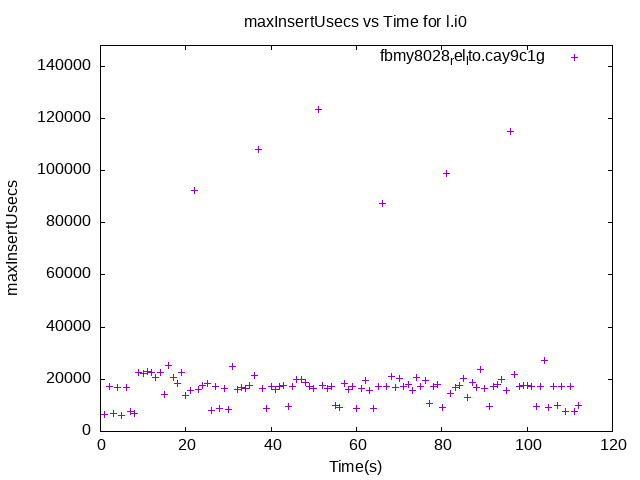fbmy8028_rel_lto.cay9c1g
fbmy8028_rel_native_lto.cay9c1g: IPS
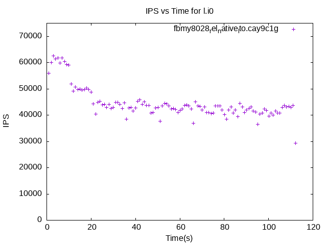fbmy8028_rel_native_lto.cay9c1g
fbmy8028_rel_native_lto.cay9c1g: max insert response time
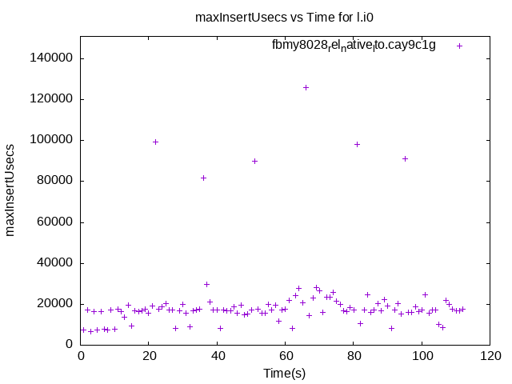fbmy8028_rel_native_lto.cay9c1g